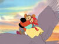
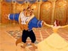
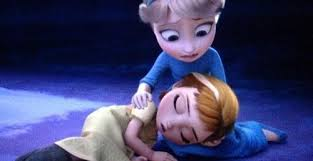
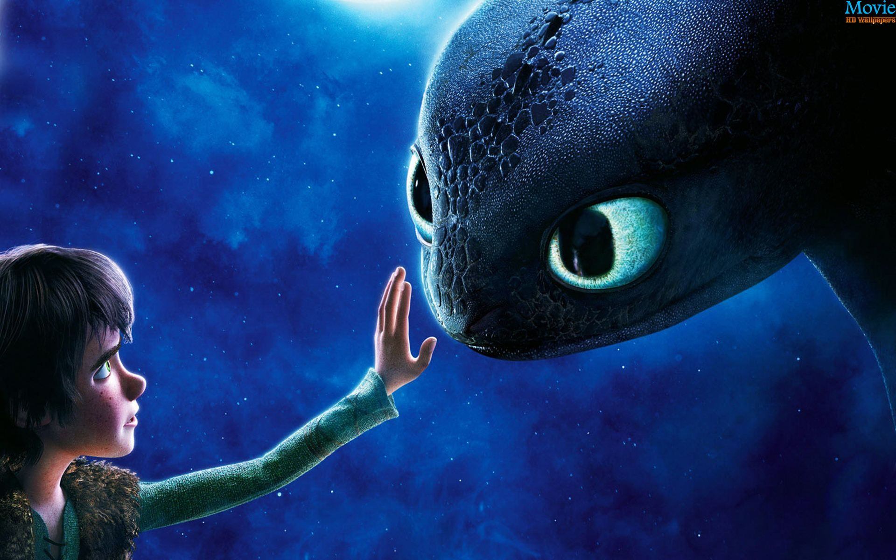
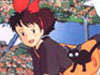
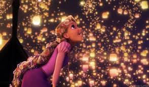

|
|
Inspired by a segment on Sesame Street, I made my first flipbook when I was in pre-school- my first taste of animation. As I moved into elementary school, I continued to draw and make flipbooks, but I also declared a variety of other future careers: illustrator, author, musician.... Every week I wanted to do something new, until my eleventh year when I saw Disney's Aladdin in a theater. I was captivated. How could I feel so emotionally connected to those characters on the screen - to moving drawings? Soon I was drawing constantly and studying anything I could find on animation. I knew I wanted to dedicate my life to capturing the magic that I saw in Aladdin.
I am currently pursuing an MFA in Animation from the Savannah College of Art and Design and earned an MA in Animation. Animation is a part of my life every day, and I'm still as passionate about it as when I first discovered it. I aspire to capture the dynamic use of animation principles of top American Feature Animation studios. I am also inspired by the inking techniques, interesting stoytelling, and unusual compositional choices of anime. Animators like Frederick Back, William Kentridge, and Karen Aqua impress me with the artistry of their films. I believe animation should be interesting visually and be an archive of cultural ideals and narratives. It is my goal to capture each of these qualities in my animation.
In my personal time, I enjoy playing the flute, bingeing on Netflix, gaming, and spending time with my family. I currently live in Minnesota with my wonderful husband, adorable son, and two beautiful kitties Mitzi and Kairi.
|
| Animated films |

Aladdin | 
An American Tail | 
Anastasia | 
Beauty and the Beast | 
Frozen |

How to Train Your Dragon | 
Kiki's Delivery Service | 
The Lion King | 
The Nightmare Before Christmas | 
Pocahontas |

The Little Mermaid | 
Princess Mononoke | 
Sleeping Beauty | 
Tangled | 
Up |
| Animated Shows |

Avatar | 
Fairly Odd Parents | 
Full Metal Alchemist | 
Gargoyles | 
Futurama |

Home Movies | 
Inuyasha | 
Powerpuff Girls | |
| TV Shows |

Battlestar Galactica | 
Buffy the Vampire Slayer | 
Doctor Who | 
Game of Thrones | 
Gilmore Girls |

Lost | 
Outlander | 
Sherlock | 
Star Trek: TNG | 
Torchwood |
| Games |

Animal Crossing | 
Chrono Cross | 
Dragon Quest VIII | 
Eternal Sonata | 
Fable series |

Final Fantasy VII | 
Final Fantasy VIII | 
Final Fantasy X | 
Katamari Damacy | 
Kingdom Hearts |

Mega Man 2 | 
Mister Mosquito | 
Puyo Pop Fever | 
Resident Evil 4 | 
Rock Band |

The Sims | 
Skyrim | 
World of Warcraft | |
|
|